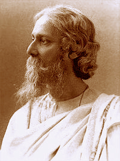

|  |
রবীন্দ্রনাথ তাঁর লেখনীতে বাঙালির জীবন যাপন , সংস্কৃতিকে যেমন তুলে ধরেছেন , তেমনি বাঙালির চিরদিনের হাসিকান্না, আনন্দ-বেদনারও রূপকার তিনি। জগতের সকল বিষয়কে তিনি তাঁর লেখায় ধারণ করেছেন। মানুষের এমন কোনো মানবিক অনুভূতি নেই যা রবীন্দ্রনাথের লেখায় পাওয়া যায় না। তাঁর সম্পর্কে কবি দীনেশ দাশ বলেছেন, ‘তোমার পায়ের পাতা সবখানে পাতা’। সভ্যতার সকল সংকটে রবীন্দ্রনাথ আমাদের নির্বিশেষ আশ্রয়। অন্ধকারে এক আলোকবর্তিকা। বাংলাভাষা ও সাহিত্যকে তিনি সারাজীবনের সাধনায় অসাধারণ রূপলাবণ্যমণ্ডিত করেছেন। অতুলনীয় ও সর্বতোমুখী প্রতিভা দিয়ে তিনি বাংলা সাহিত্যকে বিশ্ব মানে উন্নীত করে বাঙালিকে এক বিশাল মর্যাদার আসনে নিয়ে গেছেন।
বাংলা ভাষায় রবীন্দ্রনাথ ঠাকুরের সারা জীবনের লেখা অথবা রবীন্দ্র রচনাবলী এখন আন্তর্জালে সহজলভ্য। এই রবীন্দ্র-রচনাবলীতে রবীন্দ্রনাথ ঠাকুরের লেখা সমস্ত ছোটো গল্প, গান, উপন্যাস, নাটক, প্রবন্ধ ও রম্যরচনা আছে, যেগুলি আগেই বিশ্বভারতী ও সাহিত্য অকাদেমি (মূল ইংরেজি রচনা) থেকে পুস্তক হিসাবে বহু খণ্ডে প্রকাশিত হয়েছে। বাংলা ভাষায় রবীন্দ্রনাথ ঠাকুরের সারা জীবনের লেখা অথবা রবীন্দ্র রচনাবলী এখন আন্তর্জালে সহজলভ্য। এই রবীন্দ্র-রচনাবলীতে রবীন্দ্রনাথ ঠাকুরের লেখা সমস্ত ছোটো গল্প, গান, উপন্যাস, নাটক, প্রবন্ধ ও রম্যরচনা আছে, যেগুলি আগেই বিশ্বভারতী ও সাহিত্য অকাদেমি (মূল ইংরেজি রচনা) থেকে পুস্তক হিসাবে বহু খণ্ডে প্রকাশিত হয়েছে। আমরা এই প্রকল্পে বিশ্বভারতী প্রকাশিত রবীন্দ্র-রচনাবলীর সুলভ সংস্করণের পাঠ অনুসরণ করেছি। ভবিষ্যতে রবীন্দ্রনাথের মূল ইংরেজি রচনা সম্ভারও (সাহিত্য অকাদেমি থেকে ৪ খণ্ডে প্রকাশিত) এই প্রকল্পে অন্তর্ভুক্ত করা হবে। অন্তর্ভুক্ত হবে রবীন্দ্রনাথের লেখা চিঠিপত্রও যা বিশ্বভারতীর গ্রন্থনবিভাগ থেকে প্রকাশিত হয়েছে। রবীন্দ্র সৃষ্টির সামগ্রিক পরিচয় এখানে ধরা থাকবে বাংলাভাষী এবং বাংলা ভাষা প্রেমী সকলের জন্য। রচনাবলীতে আপনার পছন্দসই লেখাগুলি সুবিধাজনক ইউনিকোড বিন্যাসে পাবেন। প্রয়োজনীয় অংশ খুঁজে পেতে, লেখাগুলির উপর সহজ পরিক্রমণ বা অনুসন্ধান প্রক্রিয়া ব্যবহার করতে পারেন। মূল বাংলা লিপিতেই অনুসন্ধান করা যাবে। |